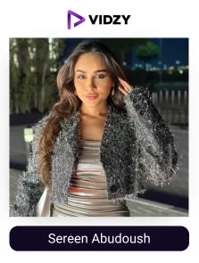
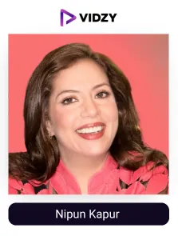
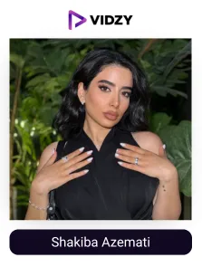
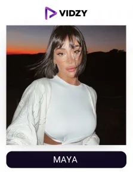
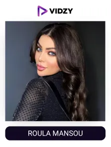
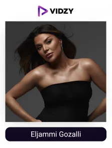
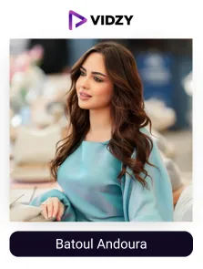

Dubai is known for its innovation, luxury, and diversity. A perfect fertile place where every industry and business flourishes, and skincare is no exception.
With the city's unique hot and humid climate, high UV exposure, dry air-conditioned environments, and occasional dust storms, residents face unique skin challenges, which makes skincare a necessity. People here are now more focused on finding the right and effective skincare solutions, which enhances the demand for skincare products.
As per sources, the skincare market in the UAE is expected to grow by USD 590 million by 2030. With this rapid growth, consumers are turning to social media for trusted advice. And nothing can beat the personal skincare experiences and recommendations shared by real people on social media platforms.
From customised routines to perfect product suggestions according to regional climate, skincare UGC creators in Dubai educate and inspire their skincare-enthusiastic audience to achieve their healthy skin goals. They compare a wide range of products in their routines, highlighting their pros and cons in a detailed and relatable way.
Their content introduces the audience to the best local and global skincare products and helps them make wise skincare choices. Skincare influencers in Dubai have become the go-to experts for people, guiding and influencing their product purchasing decisions and thereby helping the industry grow overall.
As a result, skincare brands in the UAE are collaborating with these talented creators to use the power of UGC to boost their visibility and trust and achieve exceptional results, which enhances ROI.
In search of top skincare UGC content creators in Dubai, it can be challenging for brands to find the right match for their business goals. Being the top UGC agency in Dubai, with 8+ years of experience in creating high-performing UGC campaigns and delivering brand visibility, engagement, and conversions. We have analyzed the list of top skincare UGC creators in the United Arab Emirates that meet skincare brands' objectives and goals.
Top 10 Skincare UGC creators in Dubai, UAE
Contents
-
1. Ahmad Elmolla
Channel: Ahmad Elmolla
Followers: 1MEngagement Rate: 1.63%About The Influencers-
Dr Ahmad is a famous skincare content creator from Dubai. His content is a guide to both skincare enthusiasts starting with their skincare journey and industry professionals seeking solutions to their clients' concerns.
He shares skincare tips and advice on his Instagram to help people with different skin concerns.
His deep knowledge and detailed approach to skincare products and practices have made him one of the top creators in the region.
-

2. Sereen Abudoush
Channel: Sereen Abudoush
Followers: 665KEngagement Rate: 1.20%About The Influencers-
Sereen Abudoush is a skincare content creator and certified expert living in the UAE. She is the founder of Skinchord, which provides customised skincare solutions. Sereen shares skincare routines, product recommendations, and various techniques to address the common skin concerns of her audience.
He has explored every nook and corner of the country to meet and enjoy new experiences. Siddhartha was featured in Times of India, Business Standard, Hindustan Times, etc.
-
3. Yousra Madbouli
Channel: Yousra Madbouli
Followers: 711KEngagement Rate: 1%About The Influencers-
Yousra is a popular skincare influencer living in Dubai. She is the founder of 'Thirteen for', a skincare brand that reflects her vast experience in the beauty industry. Yousra shares various skincare routines, beauty tips, hacks, and advice with her followers.
She also conducts skincare and makeup masterclasses to help her audience benefit from her expertise.
-

4. Nipun Kapur
Channel: Nipun Kapur
Followers: 1MEngagement Rate: 1.25%About The Influencers-
Nipun is one of the best skincare influencers in the UAE. She is an experienced and certified skincare consultant. She shares skincare tips, product recommendations, and routines with her audience. Her detailed and engaging approach is much admired by her followers.
She is active across multiple social media platforms. Nipun is a trusted source for skincare advice and product recommendations.
-

5. Shakiba Azemati
Channel: Shakiba Azemati
Followers: 733KEngagement Rate: 1.72%About The Influencers-
Shakiba is a popular content creator living in Dubai. She focuses on makeup, skincare, and lifestyle content. She has worked with brands like Beauty of Joseon and Sephora Middle East.
Her content is easy to relate to and mostly focuses on helping her audience find the right products for their skin, especially in the UAE’s hot climate.
-

6. Maya
Channel: Maya
Followers: 1.2MEngagement Rate: 2%About The Influencers-
Maya Ahmad is a popular skincare influencer based in Dubai. She shares her content as beauty tips, skincare routines, and makeup insights with her followers. She is also the founder of a brand called @mynethelabel.
Maya has worked with big brands like BETADINE and Yves Saint Laurent Beauty, and her content is followed by many young women across the Middle East.
-

7. Roula Mansour
Channel: Roula Mansour
Followers: 534KEngagement Rate: 1.7%About The Influencers-
Roula is one of the best skincare influencers in the UAE. Roula is a popular skincare content creator in the UAE. She shares makeup tutorials and skincare hacks, routines, product recommendations, and tips for maintaining healthy skin.
She also shares her fashion tastes with her audience. Roula's content is a valuable resource for her skincare enthusiast followers.
-

8. Eljammi Gozalli
Channel: Eljammi Gozalli
Followers: 333KEngagement Rate: 1.02%About The Influencers-
Eljammi is a popular skincare influencer in Dubai. She is the founder of GlamJam Beauty Bar salon and GlamJam Xpress, a home service app that provides clients with self-care services at their convenience. Her content includes makeup tutorials, skincare advice, and lifestyle tips, helping her beauty and wellness enthusiast audience.
Eljammi has worked with many well-known brands and is loved for her honest and creative content.
-
9. Syeda Kainat
Channel: Syeda Kainat
Followers: 176KEngagement Rate: 1.48%About The Influencers-
Syeda is a popular skin care content creator living in Dubai who shares her tips and experiences on skincare. She has a special love for Korean skincare and therefore most of her recommendations are from it, but satisfying the Dubai climate skin care needs.
Syeda also shares DIY masks, hacks and tips with her skincare enthusiast audience for healthy and glowing skin.
-

10. Batoul Andoura
Channel: Batoul Andoura
Followers: 336KEngagement Rate: 1.55%About The Influencers-
Batoul is one of the biggest skincare influencers in Dubai. She has been popular for her entertaining and educational posts on skincare. Batoul is very responsive to her followers and is very passionate about providing her followers with real skin care tips, which is why she is loved by many.
She has collaborated with major brands like Neutrogena and L’Oréal Paris, further establishing her influence in the beauty industry
Conclusion:
In Dubai, skincare UGC creators are becoming the go-to voices for beauty and skincare advice. Their experiences, product reviews, skincare routines, and helpful tips perfectly resonate with the city’s unique climate and the audience's skin concerns and needs.
Their content not only builds trust among followers but also influences their buying decisions. That’s why leading skincare brands in the UAE collaborate with these creators to reach new audiences, build brand credibility, and drive results.
As the top UGC agency, we help brands connect with the most relevant skincare UGC creators in the region to produce authentic, impactful content that truly speaks to consumers and brings out impactful growth results.
Ready to enhance the brand game with the trusted experts of skincare?
Let's connect and bring your vision to life!